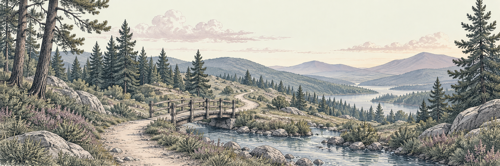

Start here · By Heather Gowrie
Welcome to Navigating The End

You may be here because someone you love is ill, because a death has left you with questions you never expected to face, or because you want to plan ahead. Whatever brought you here, welcome. You do not need to have everything figured out before you begin.
I created Navigating The End to offer clear, practical information for moments when even knowing what to ask can feel difficult.
Why I started this site
When my mother was ill, I searched for information that would help me understand what to do and when to do it. I wanted something straightforward: a guide that felt like someone sitting beside me, helping me sort through the next decision.
I struggled to find that kind of guidance. There were questions about arrangements, paperwork, and family responsibilities, all mixed with the emotional weight of losing someone I loved. Making sense of it took energy I did not always have.
Navigating The End grew out of that experience. It is the resource I wished I had: a place to begin, written in plain language, with room for the human side of every practical question.
What you will find here
Our articles explore planning ahead, the practical details that can follow a death, and ways to make life a little easier for the people we love. You will also find reflections on relationships, simplifying your belongings, and making time for meaningful experiences.
Some visits may be about an urgent question. Others may be about a conversation you have been putting off or a small step toward feeling more prepared. Both belong here.
Start with what matters today
You do not have to read everything at once. Choose the question closest to where you are:
- Thinking about an important relationship? Explore Don’t Leave Things Unsaid with Those You Love.
- Wanting to simplify your belongings? Begin with De-Clutter Your Life—Your Family Will Thank You.
One next step is enough
No article can take away the grief or make every decision simple. My hope is that what you find here helps you feel a little less lost and a little more able to take the next step.
Read one thing. Write down a question. Have a conversation when you are ready. You can return for the rest.
Thank you for being here.
Heather Gowrie
Founder, Navigating The End